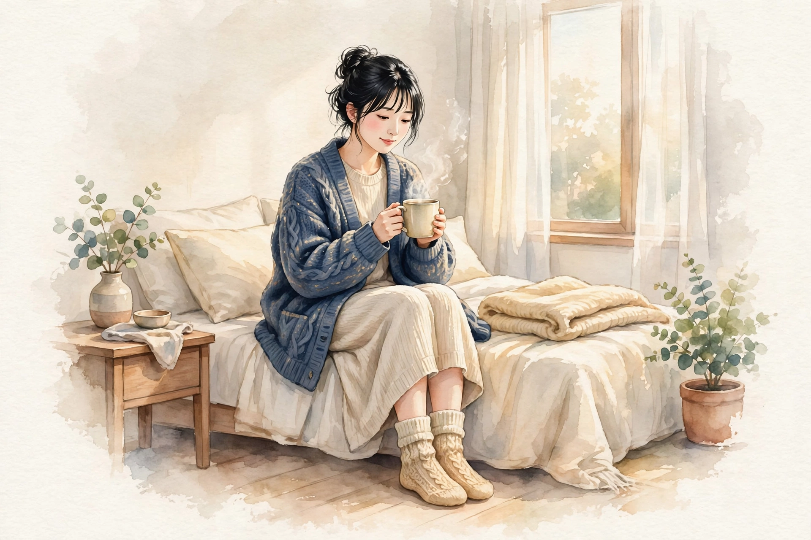

難波で朝に気になる冷え感｜起き抜けの過ごし方とセルフケア、受診の目安

１．朝の冷え感とは ― 起き抜けに意識しやすい場面
「目覚めたときから手足が冷たく感じる」「布団から出るのがつらく、朝の支度が進みにくい」「日中は気にならないのに、朝だけ足先の冷たさが残る」——朝に意識されやすい冷え感は、眠っている間の体の状態と、起き抜けの環境の変化が重なる場面で語られることが多いお悩みの一つです。ここでいう冷え感は、手先や足先が冷たく感じられる、体全体が冷えた感じがする、お腹まわりや腰まわりが冷たく感じるなどをまとめて表す日常的な言い方で、医学的な診断名ではありません。実際に体温が下がっている場合もあれば、体温は平熱でも冷たく感じられる場合もあるとされ、感じ方だけで、その背景を特定することはできません。夕方から夜にかけての冷えについては関連コラム「難波で仕事帰りに気になる冷え感」、脚のむくみと重なって気になる夜の冷えについては「難波で脚のむくみと冷えが気になる夜に」でも整理していますが、この記事では「朝・起き抜けという場面と、冷え感との関わり」に焦点を当てて整理します。この記事では、朝の冷え感の一般的な解説、考えられる要因の例、日常で取り入れやすいセルフケア、そして先に医療機関へ相談したい目安を整理します。あくまで一般的な情報としてお読みください。
２．考えられる要因の整理
朝に冷え感を意識しやすくなる背景には、次のような眠っている間の過ごし方や、寝室の環境、寝る前の習慣が関係している場合があると考えられます。
- 眠っている間の体のリズム：眠っている間は体の活動がゆるやかになり、手足の動きも少なくなります。ふくらはぎなど脚の筋肉を使う機会が減ることも、起き抜けの足先の冷たさと一緒に語られることがあります。
- 寝室の気温と寝具の組み合わせ：夜明け前は一日のうちでも気温が下がりやすい時間帯とされます。寝具が薄かったり、足もとが布団からはみ出したりする夜は、朝の冷たさを感じやすい方もいます。
- 寝る前の過ごし方：就寝前にシャワーだけで済ませた日や、冷たい飲み物を続けて取った日は、体が冷えた感じのまま眠りにつく場合があるとされます。
- 足もとや寝間着の選び方：足首を出す寝間着や、締め付けの強い衣類などは、寝ている間の感じ方に影響する一因として挙げられることがあります。
- 眠りの量と質、生活リズム：眠りが浅く感じられる日や、就寝・起床の時刻がずれた日が続くと、朝の感じ方にも影響すると語られることがあります。起き抜けのだるさと重なる場合は、関連コラム「難波で朝に気になる疲労感」もあわせてご覧ください。
- 疲れの蓄積と気持ちの緊張：忙しい日が続いたり、気持ちの緊張が続いたりする時期は、体の調子を整える自律神経のバランスがゆらぎやすいと言われます。疲れの残り方と冷え感が、重なって意識されることもあります。
- 年代や体質による感じ方の違い：冷えの感じ方には個人差が大きく、年代や体質、その日の体調によっても変わるとされます。更年期と重なる時期の感じ方の揺らぎについては、関連コラムもあわせてご覧ください。
これらは一例であり、当てはまる要因があっても、それがご自身の冷え感の背景であると決めつけることはできません。
３．日常で取り入れられるセルフケア
どれも特別な道具はいりません。起き抜けと朝の時間の中で、無理のない範囲で続けやすいものから取り入れてみてください。使い捨てカイロなどを使う場合は、同じ場所に長く当て続けると低温やけどのおそれがあるため、肌に直接貼らない、就寝時は使わないなど、製品の注意書きに従ってください。ふくらはぎの筋肉（図1）と、前腕・手の筋肉（図2）も参考にしてください。
- 布団の中で手足を小さく動かす：起き上がる前に、手を握って開く、足首をゆっくり回すなど、小さな動きから始める方もいます。急に起き上がらず、呼吸をしながら少しずつ体を起こしてください。
- 温かい飲み物を選ぶ：起床後に、白湯や温かい飲み物を両手で包んで飲む時間を取る方もいます。手先を温めながら、一日の始まりの区切りにもなります。
- 足首を覆う服装に着替える：起床後は、靴下やレッグウォーマーなどで足首を覆い、首・手首・足首を冷やさない工夫を取り入れる方もいます。締め付けの強すぎないものを選んでください。
- 手先を温め、ほぐす：温かいお湯で手を洗う、指先を一本ずつやさしくもむなど、手先を温める工夫を取り入れる方もいます。強く押しすぎない範囲で行ってください。
- 朝の光を浴びて、少し歩く：カーテンを開けて朝の光を浴びる、通勤や買い物のついでに少し歩くなど、脚の筋肉を使う場面を朝の時間に取り入れる方もいます。体調に合わせて無理のない範囲で行ってください。
- 朝食に温かいものを取り入れる：汁物や温かい料理を朝食に一品足すなど、食事の面からも体を温める工夫をする方もいます。
- 前日の夜の過ごし方を整える：湯船につかってから眠る、就寝前は冷たい飲み物を控えめにするなど、前日の夜の過ごし方から朝に備える方もいます。のぼせやすい方は、湯温や時間に気をつけてください。
- 感じ方をメモする：冷え感を覚えた朝の目覚め方や寝室の気温、寝具や前日の過ごし方などを簡単に記録しておくと、ご自身のパターンに気づきやすくなり、医療機関へ相談する際の材料にもなります。


４．受診の目安
次のような場合は、セルフケアやサロンでのケアより先に、医療機関への相談をご検討ください。
- 片側の手や足だけが急に冷たくなり、痛みや色の変化を伴う
- 手指の色が白っぽく、あるいは紫色に変わることが繰り返しある
- しびれや動かしにくさを伴い、細かい作業がしづらい
- 冷え感に加えて、強いだるさや動悸、息切れなどが続いている
- 体重が短期間で大きく変わった、汗のかき方に変化がある
- むくみが数日以上続き、朝になっても引かない
- 手足の皮膚に傷やただれができ、なかなか落ち着かない
- 冷え感が日に日に強くなり、仕事や家事に支障が出ている
これらは一例です。冷え感の背景には、血流や甲状腺の働きなど、早めの対応が必要な体の不調が関係する場合もあります。当てはまる場合や、少しでも気になる症状がある場合は、自己判断せず内科など医療機関にご相談ください。
５．当店でのケアとサロンのご案内
ステラシリウス（難波）は、月〜土 17:00〜22:00（日曜休み）に営業する女性専用サロンです。カウンセリングで当日のお悩みをうかがい、脚や手先を含めた体の状態を見ながら、オイルマッサージと美容整体を組み合わせた90分 10,000円（税込）のコースをご用意しています。完全個室で、シャワー完備のため、施術の前後に汗やオイルを流してからお帰りいただけます。お仕事帰りや、難波でのお買い物のあとの夜の休息の時間としてご利用ください。なお、ステラシリウスは近日開院予定のため、ご予約の受付はまだ開始していません。また、当サロンはリラクゼーションを目的としたサロンで、医療行為は行いません。冷え感に関する治療を行うものではありませんので、「受診の目安」に当てはまる場合は、まず医療機関へご相談ください。